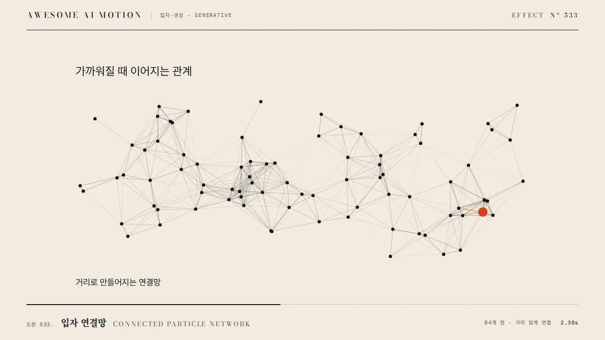

점들이 짧은 임의 이동을 반복하며 불규칙한 궤적을 남기는 랜덤 워크Dots repeat short random steps, leaving irregular trails.
점 80개가 화면 중앙에서 출발해 4초 동안 스텝 표준편차 1.5px로 흩어지며 반투명 궤적이 부채꼴로 퍼진다
스텝이 커서 점이 튀며 궤적이 직선처럼 보이거나, 난수를 실행마다 바꿔 결과가 재현되지 않는다
기본값은 클립에 쓴 값Defaults are the values used in the clip
| 항목PARAM | 기본DEFAULT | 범위RANGE | 메모NOTE |
|---|---|---|---|
| 지속 | 4s | 3~8s | 전체 재생 |
| 점 수 | 80 | 40~150 | 시드 배열 |
| 스텝 표준편차 | 1.5px | 1~3px | 고정 스텝 16.67ms 기준 |
| 궤적 불투명도 | 0.18 | 0.1~0.25 | 선 알파 |
| 시드 | 42 | 고정 | PRNG 초기값 |
function rng(s) { return () => (s = (s * 1664525 + 1013904223) >>> 0) / 4294967296; }
const r = rng(42), N = 80, steps = 240, path = [];
let pts = Array.from({ length: N }, () => ({ x: 960, y: 540, h: [[960, 540]] }));
for (let k = 0; k < steps; k++) pts.forEach(p => { p.x += (r() - 0.5) * 5.2; p.y += (r() - 0.5) * 5.2; p.h.push([p.x, p.y]); });
tl.to(u = { k: 0 }, { k: steps, duration: 4, ease: 'none', onUpdate: () => draw(pts, Math.round(u.k)) }, 0);그대로 붙여 넣는다Paste as is
<대상> 화면에 랜덤 워크를 넣어줘. 점 80개가 중앙(960,540)에서 출발해 4초 동안 240스텝을 걷게 하고, 매 스텝은 x·y에 각각 균일 난수 -2.6~2.6px(표준편차 약 1.5px)를 더해. 난수는 시드 42의 LCG를 써서 사전 계산해 표로 저장하고, 궤적은 불투명도 0.18 선으로 남겨. Math.random은 쓰지 마.
Add a random walk to <target>. 80 dots start at the center (960,540) and walk 240 steps over 4 seconds, each step adding a uniform random -2.6 to 2.6px (about 1.5px standard deviation) to x and y. Precompute with a seed-42 LCG into a table and leave trails as lines at 0.18 opacity. Do not use Math.random.
<파일>에 LCG 시드 42로 80개 점 × 240스텝 경로 표를 만들고 GSAP으로 인덱스 k를 0→240, 4초 선형 tween하며 매 프레임 0..k까지 궤적을 그려. 스텝은 균일 ±2.6px. 1초·2초·4초 캡처로 점이 중앙에서 부채꼴로 퍼지는지, 재실행 시 같은 프레임이 나오는지 비교해.
In <file>, build a path table of 80 dots by 240 steps with an LCG seeded 42, tween index k from 0 to 240 over 4 s linear with GSAP, and draw trails from 0 to k each frame. Steps are uniform plus or minus 2.6px. Capture 1 s, 2 s and 4 s to confirm the dots fan out from the center, and compare reruns for identical frames.
HyperFrames · ReelForge · Scrolline

개념 출처와 라이선스. 구현은 이 레포에서 새로 씀Concept sources and licenses. Implementations are original to this repo